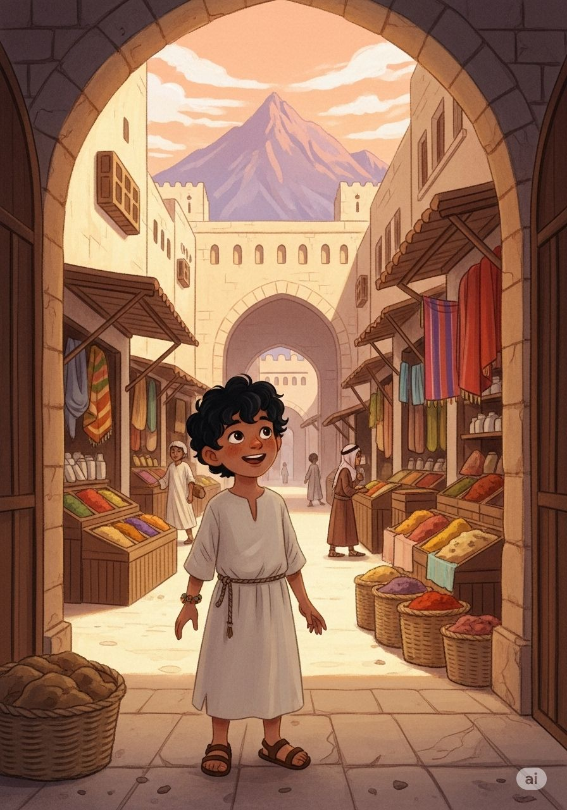
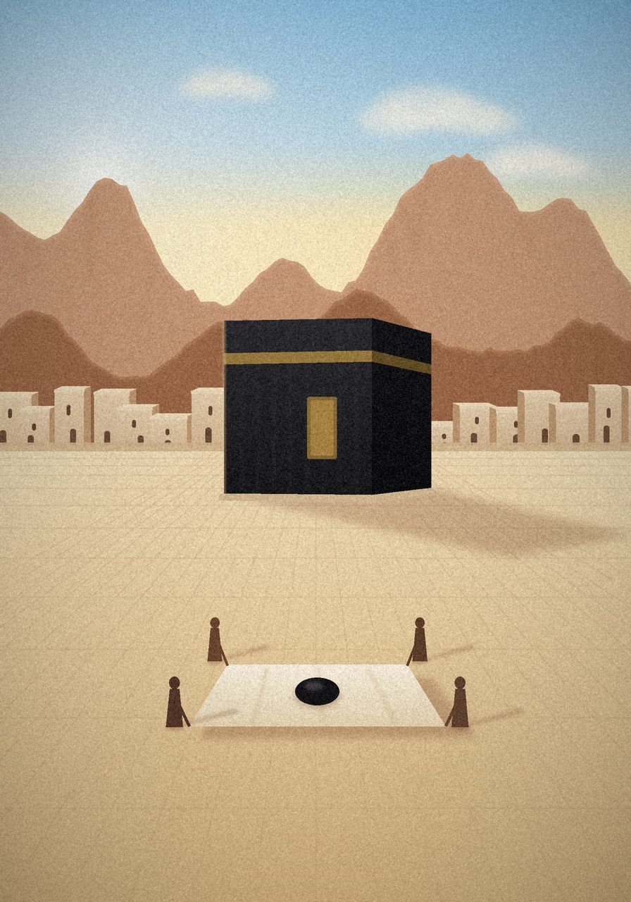
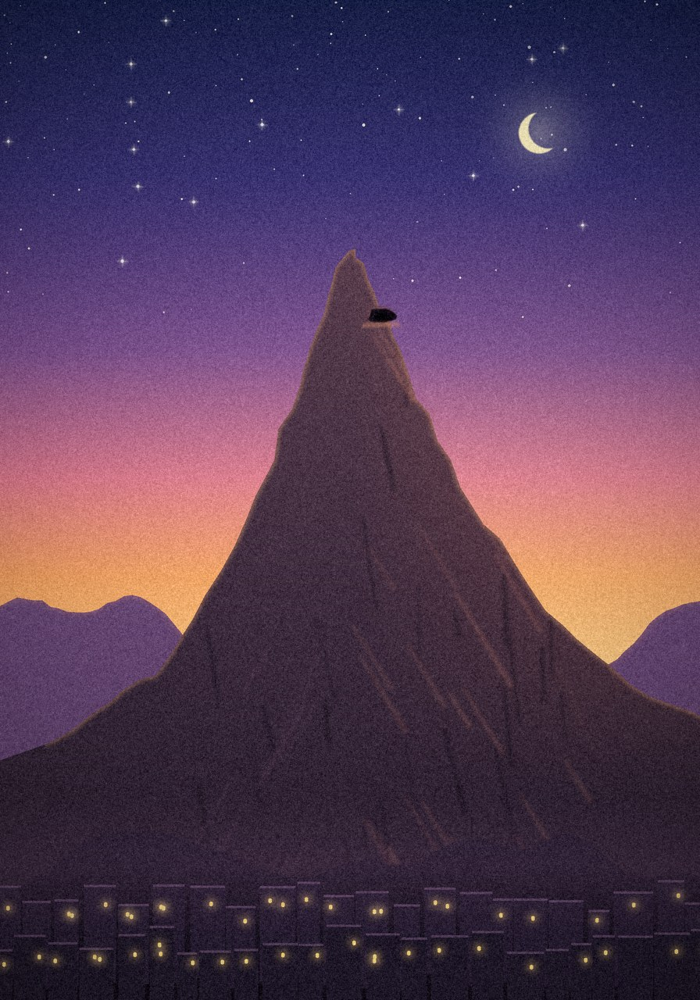
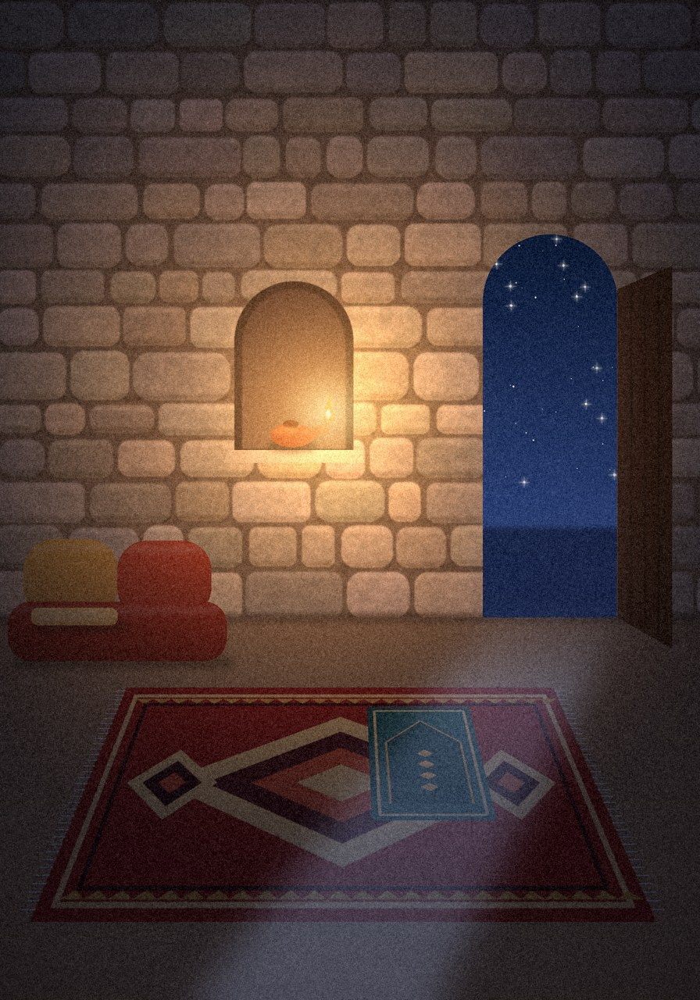
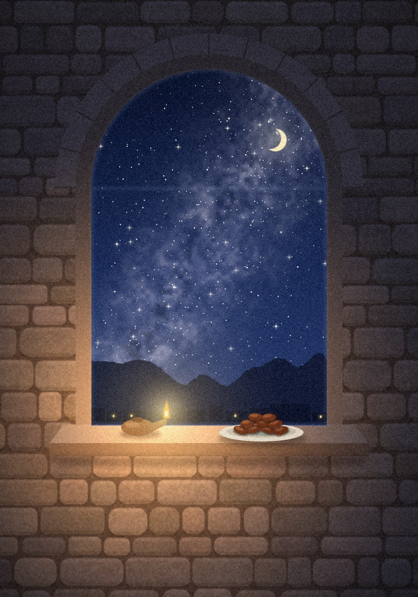
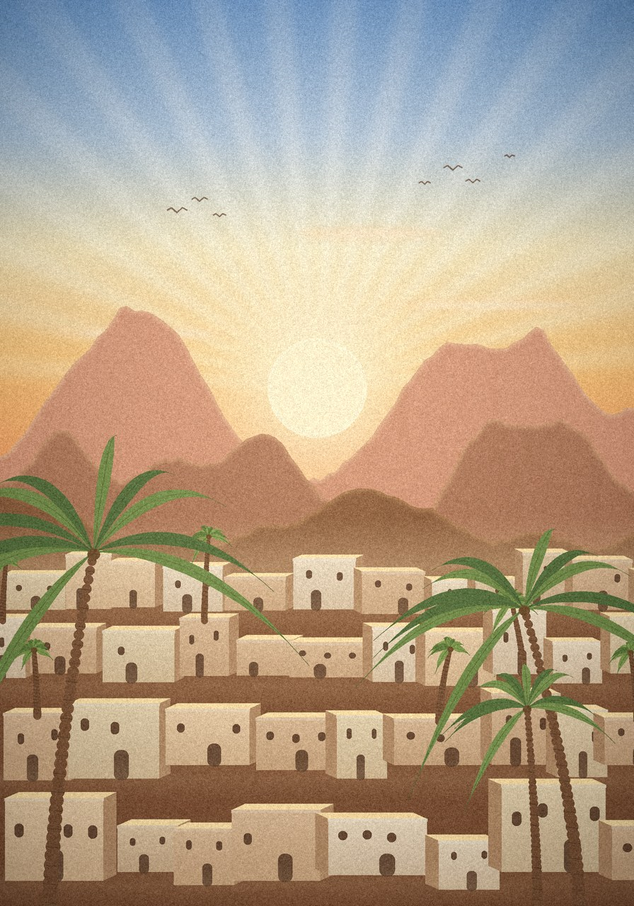

Sabah olunca Ali, Mekke çarşısına çıktı. Develer, baharat kokuları, rengârenk kumaşlar... Bir tüccar amca, elindeki keseyi komşusuna uzatırken şöyle dedi:
"Yolculuğa çıkıyorum. Bu keseyi Muhammed'e bırakalım. O, El-Emîn'dir."Ali merakla sordu: "El-Emîn ne demek amca?"
"En güvenilir insan demek evlat. Mekke'de herkes en kıymetli eşyasını ona emanet eder."
Akşam Hatice Annemiz, Ali'ye bir hikâye anlattı:
"Kâbe yenilenirken kabileler, kıymetli siyah taşı, Hacerülesved'i yerine kimin koyacağı konusunda anlaşamamışlar. 'Mescidin kapısından ilk kim girerse o karar versin' demişler. Kapıdan ilk giren O olmuş!"Herkes sevinmiş: "El-Emîn geldi, razıyız!" O (s.a.v) bir örtü getirtip yere sermiş, taşı ortasına koymuş. Her kabileden biri örtünün bir ucundan tutmuş, taşı birlikte kaldırmışlar.
Ali: "Kimse küsmedi mi?" — "Hiç kimse. Güvenilir insan, insanları birleştirir."
Peygamberimiz (s.a.v) bazen günlerce Mekke'nin gürültüsünden uzaklaşır, Hira dağındaki küçük mağaraya çıkardı. Orada ibadet eder, her şeyi Yaratan'ı düşünürdü.
Bir gün dağdan kalbi çarparak döndü. Melek Cebrâil gelmiş ve ona Allah'ın ilk emrini getirmişti: "Oku!"
Hatice Annemiz O'nu sakinleştirdi:
"Allah seni asla mahcup etmez. Sen akrabanı gözetirsin, yükü ağır olana yardım edersin, misafiri ağırlarsın."
Bir gün Ali eve girdiğinde, Peygamberimizi (s.a.v) ve Hatice Annemizi alınlarını yere koymuş hâlde gördü.
"Ne yapıyorsunuz?" "Namaz kılıyoruz Ali. Bizi yaratan, tek olan Allah'a secde ediyoruz."Ali şaşırdı: "Kâbe'deki putlara değil mi?"
"Putlar duymaz, görmez, kimseye yardım edemez. Bizi, gökleri ve yıldızları yaratan Allah birdir."
Ali biraz düşündü: "Önce babama sorayım."
Peygamberimiz (s.a.v) gülümsedi: "İstersen düşün Ali. Ama bu güzel sırrı şimdilik kendine sakla."
O gece Ali uyuyamadı. Pencereden yıldızlara baktı. "Bu kadar yıldızı kim yarattı? Beni kim yarattı?" Kalbinde tatlı bir ışık yandı.

Ertesi sabah, güneş doğar doğmaz Ali koşarak geldi.
Allah, İslâm'ı onun kalbine yerleştirmişti.
"Allah birdir, sen de O'nun elçisisin!"Peygamberimiz (s.a.v) Ali'yi sevgiyle bağrına bastı. O gün Ali, çocuklar arasında İLK İNANAN ÇOCUK oldu.
Bu kitabın değeri: Tevhid (Allah birdir) ve güvenilirlik.
Kaynaklar: İbn Hişâm, es-Sîre (Hz. Ali'nin Peygamberimizin evinde büyümesi ve ilk iman eden çocuk olması; Hacerülesved hakemliği) · Buhârî, Bed'ü'l-vahy 3 (ilk vahiy ve Hz. Hatice'nin sözleri) · Alak 96/1. Olaylar kaynaklara dayanır; diyaloglar çocuklar için kurgulanmıştır.